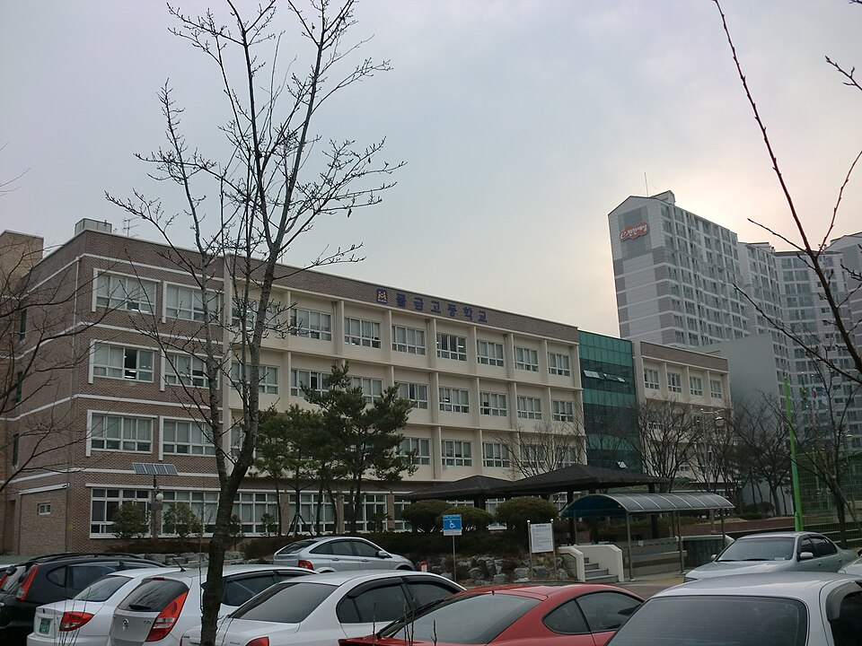

경남 양산은 관리 중인 중·고등학교만 33곳입니다. 물금고등학교·양산고등학교·범어고등학교·양산여자고등학교 같은 고등학교와 물금중학교·양산중학교·범어중학교가 시 안에 흩어져 있습니다. 물금·동면 쪽 새 아파트 단지와 중앙동·웅상 쪽은 같은 시라도 오가는 데 시간이 드는 거리라, 저녁이 이동으로 통째로 묶이는 학생은 집으로 오는 1:1 영어과외나 초등 국어과외를 따로 찾게 됩니다.
오늘은 양산으로 직접 찾아가는 선생님들 가운데 과목과 학년대가 다른 두 분을 소개합니다. 한 분은 초·중등 영어를 맡는 선생님, 한 분은 유아·초등 국어와 수학의 기본기를 잡는 선생님입니다.
양산에서 중등 영어과외를 찾는 이유는 대개 단어는 외우는데 스스로 문장을 만들지 못하기 때문입니다. 답을 받아 적는 데 익숙해지면, 조금만 바꿔 낸 문제에서 바로 멈춥니다. 이 선생님은 설명을 먼저 길게 하기보다 학생에게 묻고 답하게 하는 방식으로 진행합니다. 학생이 자기 말로 정리해 보게 하는 쪽에 무게를 둡니다.
영어 전공 과정에서 영어로 진행하는 수업을 이수했고, 미국 인턴십 과정을 거쳤습니다. 교과 수업과 함께 수행평가 준비, 학습 계획 세우기도 함께 봅니다. 수업 가능 시간이 평일 오후 1시 이후와 토요일이라 학교 끝난 뒤 시간대가 맞습니다. 방문과 화상을 모두 하기 때문에 물금·동면에서 떨어진 곳이라면 화상으로도 연결됩니다. 다만 고등 영어는 지도 가능한 학년 범위가 정해져 있으니 상담 때 확인하시는 편이 정확합니다.
최ㅇ석 선생님 상세 프로필 →양산에서 초등 국어과외 상담이 들어오는 이유는 점수보다 읽기인 경우가 많습니다. 문제를 못 푸는 게 아니라 문제에 적힌 말을 정확히 읽지 못하는 상태입니다. 이 선생님은 한글과 어휘, 글쓰기를 한 흐름으로 잡으면서 수학의 기본 연산도 함께 봅니다. 두 과목을 한 선생님이 보기 때문에, 국어에서 잡은 읽기 습관이 수학 문장제로 바로 이어집니다.
지도 범위는 유아부터 초등 6학년까지입니다. 어린 학생일수록 익숙한 공간에서 배우는 편이 집중에 유리해서 방문 수업만 진행합니다. 오랜 한국어 지도 경력에 미술심리 상담 과정을 이수해, 아이의 상태를 부모님께 설명하는 소통이 자세한 편입니다. 방문 지역은 동면과 물금읍 쪽입니다.
최ㅇ미 선생님 상세 프로필 →학교마다 진도와 시험 범위가 달라서, 학교별로 준비법을 따로 정리해 두었습니다.
👉 양산 영어과외 선생님 · 양산 관리 학교 전체 보기